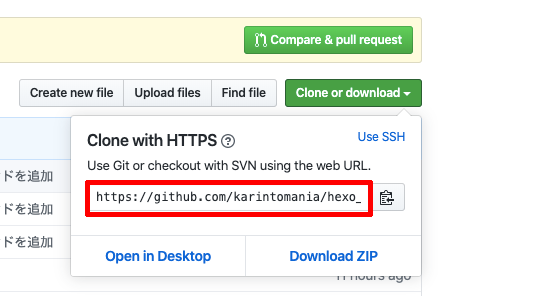

めんどくさそうなデプロイですが、
Hexoならコマンド一発で楽勝です。
Gitの設定
デプロイにはGitを使うので、
設定を済ませてしまいましょう。
以下のコマンドでユーザ設定をします。
1 | /app/test # git config --global user.name "Your Name" |
_config.ymlの設定
_config.ymlの設定をします。
その前に、対象リポジトリのURLを調べておきましょう。
GithubでWebサイト用に作成したリポジトリの Clone or Downloadボタンをクリックすると、
コミット用URLが表示されます。

URLを取得したら_config.ymlを以下のように編集します。
1 |
|
設定ができたら以下のコマンドでデプロイします。
1 | /app/test # hexo deploy |
デプロイできたらGithubPagesへアクセスして確認してみましょう。
https://{githubのusername}.github.io/{リポジトリ名}/
できたでしょうか。
これでサイトができました！！おめでとうございます。
ちなみにこのやり方だと、gh-pagesブランチに公開用ソースを格納して、
Masterブランチは使用しません。
なので、Masterブランチに下書きも含めたフォルダ全体を管理するリポジトリにしてしまうのがいいのかなと思います。